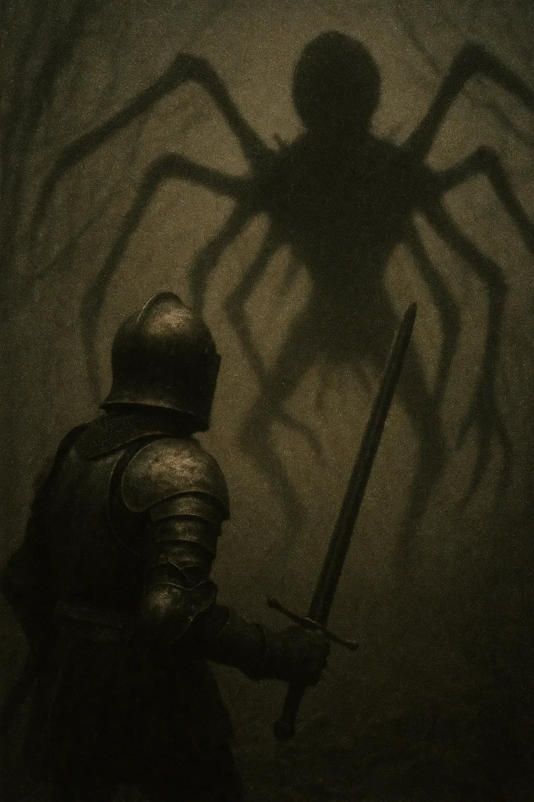

그의 손에 든 검이 떨림이 있었다. 두려움 때문이 아니었다—물론 두려움도 충분히 있었지만—그의 어깨에 번지는 독사의 물린 상처 때문이었다. 알드릭 경은 이 잊혀진 지하 묘지의 깊은 곳에서 그를 기다리는 주요 위험 앞에 전주곡에 불과한 수호 거미들을 예상하지 못했다.
[The sword trembled in his grip, not from fear—though there was plenty—but from the venomous bite festering in his shoulder. Sir Aldric hadn’t expected the guardian spiders, mere appetizers before the main feast that awaited him in the depths of these forgotten catacombs.]
피가 그의 갑옷 안으로 흘러내렸고, 한 방울 한 방울이 그의 남은 힘의 순간을 카운트다운하는 메트로놈 같았다. 그의 왼팔은 이미 감각을 잃었고, 독이 그의 체내 깊숙이 퍼져나가면서 차가운 땀이 그의 이마에 맺혔다. 둥근 천장의 방이 그의 앞에 펼쳐졌고, 고대의 기둥들은 어둠에 잠긴 천장을 지탱하는 석화된 나무들처럼 서 있었다. 그의 횃불은 춤추고 합쳐지는 야생의 그림자들을 드리웠고, 그것들은 장난스러운 유령들처럼 보였다가 그렇지 않게 변했다.
[Blood trickled inside his armor, each drop a metronome counting down his remaining moments of strength. His left arm had already gone numb, and a cold sweat beaded his brow as the poison worked deeper into his system. The vaulted chamber stretched before him, ancient pillars like petrified trees supporting a ceiling lost to darkness. His torch cast wild shadows that danced and merged, playful specters until they weren’t.]
한 그림자가 횃불의 흔들림에도 움직이지 않았다.
[One shadow refused to move with the torch’s sway.]
“8년 동안 당신을 쫓아왔소,” 알드릭이 속삭였고, 그의 목소리는 넓은 공간에 메아리쳤다. “마렌나를 데려간 지 8년이 지났소.”
[“Eight years I’ve hunted you,” Aldric whispered, voice echoing in the vast space. “Eight years since you took Marenna.”]
먼 벽에 있는 거대한 그림자—괴상한 왕관처럼 펼쳐진 여덟 개의 다리—는 움직이지 않았지만, 어쩐지 더 커지는 것 같았다. 단순한 반사가 아니라, 그 생물 자체가 실체와 그림자 모두를 지닌 존재였다. 알드릭은 검을 들어올렸고, 그 마법이 깃든 강철은 횃불 빛을 받아 굶주린 듯 반짝였다.
[The massive shadow on the far wall—eight limbs splayed like a grotesque crown—remained motionless, yet somehow seemed to grow larger. Not just a reflection, but the creature itself, somehow both substance and shadow. Aldric raised his blade, its enchanted steel catching the torchlight in hungry glints.]
“그녀는 아직도 비명을 지르고 있다, 기사여.” 그 목소리는 귀가 아닌 그의 마음속으로 미끄러져 들어왔다. “그녀의 영혼은 내가 수세기 동안 먹어본 것 중 가장 달콤했지.”
[“She still screams, knight.” The voice slithered into his mind rather than his ears. “Her soul is the sweetest I’ve consumed in centuries.”]
독의 안개가 짙어지는 가운데, 알드릭은 자신이 발견한 고대 문서들을 떠올렸다—천 년 전으로 거슬러 올라가는 실종 기록들, 모두 고대 학자들이 아라크니악스라고 이름 붙인 생물 때문이라고 여겨졌다.
[Through the gathering fog of venom, Aldric recalled the ancient texts he’d found—records of disappearances dating back a millennium, all attributed to the creature that ancient scholars had named the Arachniax.]
알드릭은 비틀거리는 걸음으로 앞으로 돌진했고, 그의 검은 단순히 그 생물의 투영이 아닌 실체를 향해 호를 그리며 날아갔다. 강철은 그 존재가 어둠 속으로 녹아들자 아무것도 맞추지 못했다. 검은 돌에 부딪혔고, 벽을 긁으며 불꽃이 튀었다.
[Aldric lunged forward with faltering steps, his sword arcing toward the creature itself, not merely its projection. Steel met nothing as the entity dissolved into darkness. The blade struck stone, sparks exploding as it scraped wall.]
“예측 가능하군,” 이제 그의 뒤에서 쉿쉿거리는 목소리가 들려왔다.
[“Predictable,” came the hissing voice, now behind him.]
그는 휙 돌아서며 방어적으로 횃불을 휘둘렀지만 빈 공기만 비췄다. 깜빡이는 불빛 속에서, 그는 이전에 눈치채지 못했던 것을 보았다—천장에서 매달린 거미줄 같은 가느다란 실들이 빛이 닿는 곳에서만 간신히 보였다. 그 신비로운 거미줄 속에서, 얼굴들이 밀려나오는 것 같았고, 입은 들리지 않는 비탄으로 벌어져 있었다. 그때 위에서 거대한 무언가가 떨어졌다.
[He whirled, bringing his torch forward in a defensive sweep that illuminated nothing but empty air. In the flickering light, he glimpsed something he hadn’t noticed before—gossamer strands hanging from the ceiling, almost invisible except where the light caught them. Within those ethereal webs, faces seemed to push through, mouths open in unheard lamentations. Then something massive dropped from above.]
키틴질 다리가 마치 공성추처럼 그의 갑옷을 강타했다. 심장 박동이 급격히 뛰면서 독이 몸 안에 퍼져 시야가 흐려졌다. 그 충격으로 그는 땅에 쓰러졌고, 그의 투구는 종처럼 울렸으며, 의식은 검은 별들 속에서 헤엄치는 것 같았다. 오직 본능만이 그를 구했다—그의 심장이 있던 자리에 창 크기의 독침이 돌을 관통할 때, 그는 필사적으로 구르며 피했다.
[Chitinous legs struck his armor with the force of battering rams. The venom surged with the spike of his heartbeat, making his vision blur. The impact drove him to the ground, his helmet ringing like a struck bell, consciousness swimming in black stars. Only instinct saved him—a desperate roll as a stinger the size of a spear pierced the stone where his heart had been.]
아라크니악스가 완전히 모습을 드러냈다. 인간과 거미 부분이 기괴하게 결합된 그 몸체는 기름진 무지개빛으로 빛났다. 그 얼굴은 마렌나의 끔찍한 근사치였다—그녀의 특징들은 알아볼 수 있었지만 왜곡되어 있었고, 마치 그녀의 모습이 괴물의 둥근 머리 앞부분에 주조된 것 같았다. 한때 친절했던 그녀의 눈은 불안한 대칭으로 복제되어 있었다—거미의 눈처럼 네 쌍이 배열되어 있었고, 각각은 그가 기억하는 파란 색조를 유지하고 있었지만, 인간성은 완전히 사라져 있었다.
[The Arachniax came fully into view. Its body, a corrupt marriage of human and spider parts, gleamed with an oily iridescence. The face was a horrific approximation of Marenna's—her features recognizable but distorted, as if her likeness had been molded onto the front of the creature’s bulbous head. Her once kind eyes were replicated in unsettling symmetry—four pairs arranged where a spider’s would be, each retaining the blue hue he remembered, yet devoid of humanity.]
“난 당신을 위해 특별히 이 얼굴을 만들었어,” 그것이 조롱했다. “난 모든 희생자들의 모습을 어떤 식으로든 간직하지만, 이런… 특별한 대우를 받을 자격이 있는 이는 거의 없지.”
[“I crafted this visage just for you,” it taunted. “I wear all my victims in some fashion, but few deserve such… prominence.”]
거의 들리지 않는 소리가 방 안을 채웠는데, 수세기 동안 갇혀 있던 수많은 영혼들의 집단적인 목소리였다.
[A barely audible vocalization filled the chamber, the collected voices of countless souls trapped over centuries.]
분노가 알드릭 안에서 폭발했고, 순간적으로 독의 짙어지는 안개를 뚫고 타올랐다. 그는 괴물의 얼굴을 향해 횃불을 던졌다. 그 순간적인 방심을 틈타, 그는 몸을 일으켰고, 갑옷은 항의하듯 삐걱거렸으며, 칼이 괴물의 부드러운 배 밑을 파고들자 사지는 점점 무거워졌다.
[Rage erupted within Aldric, momentarily burning through the venom’s thickening fog. He hurled the torch at the creature’s face. In the instant of distraction, he drove upward, armor creaking in protest, limbs growing heavier by the second as the blade found purpose in the soft underbelly of the monster.]
죄악처럼 검은 체액이 그가 검을 더 깊이 비틀자 그의 팔 위로 쏟아졌다. 아라크니악스는 비명을 질렀다—이제 그의 마음속이 아니라, 고막을 찢을 듯한 실제 소리였다.
[Ichor, black as sin, gushed over his arms as he twisted the sword deeper. The Arachniax screeched—not in his mind now, but a physical sound that threatened to shatter his eardrums.]
그것의 다리가 그를 기괴하게 껴안으며, 그가 계속해서 칼을 위로 밀어 넣는 동안 그를 더 가까이 끌어당겼다. 면도날처럼 날카로운 다리 하나가 그의 견갑을 관통하여 살을 깊이 파고들었다.
[Its legs wrapped around him in a grotesque embrace, drawing him closer as he continued to drive his blade upward. One razor-edged limb sheared through his pauldron, biting deep into flesh.]
“내가 죽으면, 너도 나와 함께 가게 될 거야,” 그것이 마침내 목소리가 흔들리며 약속했다.
[“If I die, you join me,” it promised, voice finally faltering.]
알드릭은 투구 아래에서 미소를 지었고, 이빨은 붉게 물들어 있었다. “그게 항상 계획이었지.”
[Aldric smiled beneath his helmet, teeth painted red. “That was always the plan.”]
그는 칼자루가 살에 닿을 때까지, 축복받은 은이 아라크니악스의 타락한 심장에 닿을 때까지 계속 밀어 넣었다. 어둠이 그의 시야를 잠식해 가는 동안, 그는 그들 주위에서 무언가가 반짝이는 것을 보았다—수세기 동안 그들을 가두었던 유령 같은 거미줄에서 해방되는 수십 개의 반투명한 형체들이었다.
[He pushed forward until hilt met flesh, until the blessed silver reached the Arachniax’s corrupted heart. As darkness crept into his vision, he saw something shimmer around them—dozens of translucent figures breaking free from the spectral webs that had imprisoned them for centuries.]
그들 중에서, 마렌나의 얼굴—그녀의 진짜 얼굴—이 방이 어둠 속으로 무너져 내릴 때 그에게 미소를 지었다.
[Among them, Marenna’s face—her true face—smiled at him as the chamber collapsed into darkness.]